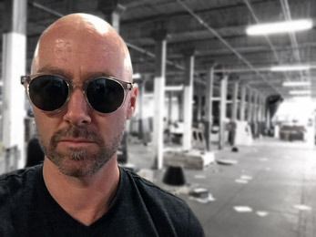

recent musings
insert posts here
work in progress. don't worry about it.
mapping
What is the modern web mapping workflow and what skills and processes are needed to make a web map?
Harnessing the power of the Open Web Platform for mapping
The predominant current web mapping workflow consists of a range of technologies, skills, and conceptual knowledge, as well as a process for their implementation to achieve a desired result. The range and sequence of the web development workflow is in part captured by the notion of the full stack, which refers to the suite of technologies and required skill sets needed to successfully transform data into a deployable product on the web. This stack is often conceived as a continuum from “back end” server-side technologies to “front end” client-side technologies through to the design of user experience (UX) itself. The term full stack is often used to refer to the occupations or people who possess the skills and expertise that span the entire workflow as well, as in a “full stack developer.” While the web mapping workflow introduces new objectives and knowledge into the scope, the full stack is useful way of articulating the workflow process. The full stack maps nicely to a web-mapping workflow, particularly in terms of determining various roles that suite individual strengths and preferences.
teaching
teaching philosophy
My work as an academic scholar is strongly committed to excellence in teaching and education. Both my Masters degree in Education and my dissertation research—the latter of which focused upon pedagogy and curricular improvement of digital Cartography courses—strongly contributed to a teaching philosophy that guides my practice within the classroom. This philosophy can be simplified to one simple goal: that of empowering student learning.
I employ a variety of teaching strategies to achieve the goal of empowerment that are grounded in three principles. First, a principle of instant feedback guides how I design instructional aids as well as my responsiveness with students. Geospatial technologies in particular are difficult to teach well due to the magnitude of related concepts and skills. The use of web-based live code editors and short, scripted examples in which students can immediately see the rendered outcome of their work is essential for solidifying conceptual knowledge and motivating students to keep learning. While instructing the laboratory sections of Graphic Design in Cartography and Interactive Cartography & Geovisualization at UW-Madison, I persistently revised tutorials and lab examples—as well as their mode of presentation and the technologies employed—to promote this principle of immediate feedback. I strongly believe that these techniques are useful for demonstrating cartographic concepts within within lecture as well. Rather than merely showing existing examples of appropriate bivariate thematic symbology or the application of Bertin’s visual variables to a given geographic phenomenon, for example, small prototypical examples of these concepts can be adjusted in real time for demonstration purposes and later experimented and modified by students to suit a given task requirement. This is but one example of how lecture material can be more effectively integrated with laboratory work. Finally, a rapid reply to an email or quick return of assessment on assignments are also examples of instant feedback I prioritize that makes students feel valued and again maintains their interest in the material.
A second principle informing my teaching is that of maximal challenge. Students learn best when they are pushed just to the point of being overwhelmed. While it is crucial to provide appropriate scaffolding to meet learning objectives, as well as limit the array of new concepts introduced at any one time, the highest learning gains are achieved when students struggle to understand a new idea or concept. I push student toward maximal challenge through careful attention to the scope (i.e., the depth of knowledge about a given subject) and sequence (i.e., the order in which new concepts are introduced) of GIScience and Cartography-related material. For example, when teaching students the basics of web map interface development, I first introduce a few of the required competencies that govern the structural (i.e., HTML/SVG), stylistic (i.e., CSS) and behavioral (i.e., JavaScript) elements of an interactive information graphic. I then push students to understand how they work in concert to produce the desired outcome. A second pass through the sequence then propels students to think more deeply through the scope of new concepts. While a third pass then challenges students to connect these visual elements with a cartographic solution that meets an end user’s interface objective. Teaching to the maximal challenge, however, requires vigil attention to students’ frustrations and motivation levels, and the ability to adapt the instruction when needed. Through employment of such teaching strategies, students under my instruction have been highly successful in national student mapping competitions, including three first-prize winners of the annual NACIS student mapping competition and one first-place prize for the National Geographic student mapping competition. Students under my mentorship have also been awarded the Code for America fellowship and gained internships working for USAID and National Geographic.
A third principle that ensures success in the classroom is ownership over the experience. Two elements that impede effective learning are misconceptions (i.e., beliefs that students bring with them into the classroom that lead to incorrect or counterintuitive understandings) and threshold concepts which act as conceptual gateways to either hinder or enable “aha” moments that integrate existing knowledge with new understanding. My teaching prioritizes active student learning to promote critical reflection of assumed knowledge (to counter misconceptions) and effectively overcome a steep, often technically challenging, learning curve. Promoting such ownership involves leveling hierarchies between myself and students to think through problems together, side by side, and posing key questions at key times. Admittedly, this level of dedication subsumes a great deal of time when done one-on-one, so I promote greater collaboration between advanced and less experienced students to help augment such explanation. Collaborative learning among students additionally helps expose misconceptions. For example, when thinking through a problem such as how to integrate the Python and GDAL environments for more efficient raster manipulation, one student may notice another has not properly set environmental paths in the proper sequence, and she can quickly point this out. These seemingly trivial blockages can substantially stymie a students progress through an exercise. The crucial pedagogical technique for enabling ownership over threshold concepts is providing many small examples that build upon and relate to one another, yet require students make the final step or draw the connections themselves. When lecturing UW-Madison’s Geocomputing course, for example, I realized that merely demonstrating concepts such as how Python reads binary files such as the shapefile (.shx) index file was drastically improved when providing students with pseudo-code and offering smaller example scripts that independently performed such tasks retrieving the number of polygons from the index file. Therein lies the path to the “aha” moment that empowers student learning and crystallizes their understanding of complex geospatial concepts and skills. I was also fortunate to assist the instructor in our Undergraduate Research Colloquium in which students were given ownership over their learning while conducting a primary-evidence based research project. One student I guided through this process and wrote a letter of reference for was later admitted for a Masters program at Columbia University.
The Carl O. Sauer Professor Emeritus Bill Denevan inspired me when he gave a lecture for UW-Madison’s Yi-Fu Tuan Lecture Series in which he spoke of a productive and dialectical relationship between teaching and research throughout his career. Today I find myself extremely fortunate to have mapped out a similar path forward through my own career. For me, the practice of doing cartography is entwined with both teaching map making within the classroom and a research agenda which shifts the “user” in user-centered design to that of the mapmaker, in this case, the student. I do not haphazardly apply inherited teaching material to a learning environment, nor do I allow apathy or work overload hamper my commitment to excellence in teaching. Rather, I leverage the principles of instant feedback, maximal challenge, and ownership over experience to produce the most effective student learning environments possible.
let the experience speak for itself
I taught for four of the Department of Geography's upper-division courses at UW-Madison between 2010 and 2013:
Here you will find information about these courses, as well as the comments from my student evaluations.
Interactive Cartography & Geovisualization
lab instructor, Spring 2013 & Spring 2012
- course website
- Spring 2013 syllabus (PDF)
- Spring 2013 final projects
- Spring 2012 syllabus (PDF)
- Spring 2012 final projects
summary: Geography 575 (G575) provides a comprehensive overview of topics related to dynamic mapping, topics typically considered under the cartographic research thrusts of Interactive Cartography and Geovisualization. G575 focuses on the design and development of user interfaces to geographic information and associated map-centered representations of these information, drawing from research and practice on Human-Computer Interaction, Information Visualization, Usability Engineering, and Visual Analytics, perspectives that you are unlikely to receive in other GIS courses. Specifically, G575 emphasizes mapmaking over map use (compared to G170) and the design of interfaces to maps rather than the maps themselves
student comments Spring 2013
- Rich is amazing. He should earn 100% TA funding, not the standard 45%... This is no part time gig, Rich put his heart and soul into this job. We couldn't have achieved what we did without him. I want to work for this guy.
- Rich was an extremely effective teacher who was always willing to help outside of lab and really cared about teaching his students how to code. I don't think the students would have learned the material as well without Rich as a TA. In the future, I would recommend having the TA teach the first two labs instead of DoIT, then we can begin learning Leaflet quicker.
- Rich was one of the most helpful, most knowledgeable TA I have ever come across. He was always available for consultation, did more than is required of him. If he did not know something he always looked it up and informed the student. He seemed genuinely concerned about the students and always did his best to help us students to excel as much as we can within the given time frame. The class would have been much less efficient and worthwhile without him as our TA!
- I think Rich is a great teacher. I learned a LOT in the labs, as well as going to his office hours.
- RICH IS AWESOOOOOOOOOOOOME. great teacher, effective, helpful, patient. THANKS RICH!
- Rich did a great job TAing this class... it was a lot of work for him, but he was always available to meet in person or offer assistance over email. He really knows his stuff and was very helpful providing feedback about the labs during and after completion.
- Rich is a fantastic TA. Incredibly knowledgeable and helpful! I doubt I could get all the labs done without his help. Rich was by far what got me through these labs. I honestly would not have been able to complete any of them if it wasn't for Rich. He is available outside of class by e mail, he's incredibly knowledgeable about JavaScript and these libraries, and he did a great job of working with what he was given. Hopefully, Rich will continue to TA this class, because it definitely needs someone like him who is patient with students and knowledgeable.
- An incredible TA. Honestly the best I have ever had. Rich made himself available almost 24/7 and would be glad to meet wherever and whenever. He provided the right balance of instruction and assistance during lab. Super knowledgeable about the subject matter and an overall great guy! I would so lucky to have him as a TA again in the future, or perhaps an instructor!
- Rich was a fantastic TA, possibly the best TA I've had here at UW. He was very accessible, positive, and helpful, and accommodated my relatively low level of background knowledge extremely well.
student comments Spring 2012
- Thank you for being a great TA and for all of your help!
- Excellent TA, very knowledgeable and available. One of the best TAs at this school! Hands down.
- Rich was a great TA! Always willing to help and extremely knowledgeable in the topic!
- Rich was an excellent TA. He was extremely dedicated and tirelessly helpful in completing our assignments. This class would not have functioned without his endless efforts and availability. Thanks so much!
- Thanks again for a great semester Rich!
- Great TA. Very helpful and accessible.
- Thanks so much for all your help, you were a wonderful TA.
- I’ve had Rich as a TA before; he knows what he is talking about and is helpful.
- Most dedicated TA I have ever had. Pushed us all extremely hard to develop and learn and he was there to help whenever needed.
Graphic Design in Cartography
lab instructor, Fall 2012
lab instructor, Geog 572 Fall 2012
summary: Geography 572 (G572) provides an extended examination of advanced topics regarding cartographic representation, or the graphics, sounds, haptics, etc., constituting maps that are employed to encode geographic information. This course focuses on cartographic design for the web rather than print, and draws upon research and practice on graphic design, information visualization, and semiotics. The course emphasizes mapmaking over map use and the design of web-delivered maps themselves, rather than the design of interfaces to these maps.
student comments Fall 2012
- Awesome
- Does a wonderful job of offering comprehensive feedback, while taking the time to help students understand topics and materials.
- Rich is a wizard. I think he's hiding a magic wand under his classy apparel. Any time I feel stumped by a programming problem, I ask him for assistance, and he comes and looks over my shoulder while I explain the problem and it magically resolves itself.
- Rich's knowledge of web design translated over to his teaching of the labs in a very effective way that allowed him to help all the students in the class, regardless of their web design experience. He gave useful feedback on course assignments and made himself readily available to answer questions or meet about a project.
- Rich is very helpful working through course issues one on one. I sincerely appreciate all the extended lab hours he took to help us. This course would not be possible with his personable character and appreciation for the variety of skill levels. Thank you Rich.
- awesome
- awesome. I wish he taught the whole class, not just the lab.
- Very passionate about course topic and provided an open minded space for students to discuss project ideas.
- Rich was really helpful both in class and via appointment outside of class... great TA overall
- Great job Rich! Hope to see you in 575!
- Very knowledgeable and helpful TA.
- He is a person with great patience.
- This is the second time I have had Rich as a TA and he has been terrific at fostering a learning environment. I find him extremely approachable and understanding. Thanks for everything!
- Great facilitator, competent expert good all around!
- Rich, you are awesome.
- Very helpful and patient and great feedback.
- Rich was great. Took the time to work w us on our individual projects, and gave really great, detailed feedback.
- Excellent. Often well versed on the subjects at hand and open to new and additional insights brought by students. Teaching ability alone is quite strong.
Geocomputing
instructor, Geog 378 Spring 2011
lab instructor Spring 2011, Spring 2010
summary: This course is intended to be an introduction to scripting and programming for GIS and spatial analysis. Geog 378 will cover the following topics: shell scripting and batch files, accessing and using open-source GIS libraries, scripting and programming using the Python programming language, and accessing ArcGIS functionality using Python.
student comments Spring 2011
- Really enjoyed the semester Rich! You did a great job introducing us to Python & I appreciate all the long hours you put in!
- Honestly, a very well taught course. Certain topics such as binary and particular aspects of the OS were probably beyond the scope of this course. Overall though I feel very confident for future programming needs. Thanks Rich!
- I enjoyed the course and had a positive experience overall. You were available for help which made the labs manageable when I couldn't figure a problem out. The difficulty level was just right for people coming from a non CS background.
- Great at teaching difficult material. Stress greater emphasis on outside resources like Think Python and user forums.
- Obviously the GDAl/OG, ARC segments were a bit sketchier, but I thought you did well in conveying why that is and showing us where to go to continue learning. I appreciated the flexibility in extending the Python-centric segment of the course. Would have been lost without the extra time & focus.
- Suggestion: trim lab work by 750/0-50% and include a mUlti-part project that is ongoing throughout the course. Something that is built upon.
- Lab was really useful when learning Python/scripting, etc. Some labs took a long time & were extremely hard. Good class - wish there was more GIS-involved programming included.
- Extremely helpful and willing to meet outside of class time and even office hours. Some modules felt hurried and less important. Course flow could be improved by limiting command shell/GDAC/OGR focus initially and going to Python sooner. Appreciated flexibility in assignments/due dates being adjusted to difficult/work load.
- Lectures were extremely effective, esp. after we were able to move to 380. Enjoyed the hands on approach to the course. Really helped me to understand the application of the material. Good balance between assessing conceptual knowledge and scripting/writing code (i.e. through quizzes, exams & labs). Rich really made himself available - went above & beyond. Thanks! Big help!
- Instructor showed great enthusiasm. Spent countless hours away from his own work to focus on improving the class/making it more informative.
- The class was great. It definitely made me challenge myself but in a good way. I think I havelearned a great deal. The class/lecture should always be held in computer lab if possible. I wish we touched on class lecture, however I appreciate the time you took to' explain other material and give time for it to sink in.
- Rich is a great instructor. He is always willing to help even outside of class and his office hour.
- Rich - this course greatly exceeded my expectations. The material and nature of scripting is quite enjoyable. As a 1st year instructor you did an excellent job of organizing the course, making yourself available, replying to emails, etc. Seriously, well done. This was my favorite course ofthe semester and makes me much more excited about the GIS certificate program. Also, I could tell you put a lot of effort and patience towards the students who were struggling, which is very respectable.
- I thought it was great how, while Rich didn't exactly give us everything we needed, he gave us the methods for finding what we need. I think this was more helpful, as this is the nature of the subject. Rich was happy, accessible, knowledgeable, and helpful. He helped make the class quite enjoyable.
- Rich was always available to help with any scripting problems, even if not directly related to this course. I really liked that the quizzes tested our knowledge while also giving ideas for the solutions to the labs. Having lecture in 380 made it easier to follow the lectures. Open book/computer exams were also very helpful because they were more like how scripting is donein the real world. I would have
student comments Spring 2010
- Very knowledgeable & helpful. Unfortunately, the lab material and the lecture material don’t always seem to be timed together. Some of the labs seem to be just a little too hard.
- Everything was great until lab 8 – methods of GDAL/OGR, ARC files confusing… Also more practice on reading/writing would be helpful.
- Rich – thanks for putting all the effort that you did into teaching this class. It was much appreciated. You were great at making time outside of class. Future class suggestions: In later labs especially, it would be very helpful for an outline of “how to get started.” I wasted dozens of hours on labs b/c I simply didn’t know how to start. I think this could be balanced with the learning process & how to learn programming.
- More visual aids, i.e. list, dictionary, etc. Add another lab section but on different days.
- Thanks Rich, you did a great job! The labs really helped me get a better understanding of the course material.
- Rich did a great job. I believe he will make an excellent instructor next year. Rich was sometimes a bit slow with correspondence. But otherwise, a very solid TA.
- I enjoyed having Rich as our TA very much. He is approachable, knowledgeable, and flexible when necessary. I would recommend his lab sections to other students should he teach this class again in the future.
- He was an effective TA. He answered questions in a clear and concise manner.
- Rich is a gifted educator, my only suggestion is the number of labs. Instead of 9-10 total labs with a couple of weeks to complete, possibly 12-14 labs due weekly with less tasks and more straightforward scripting without multiple new concepts to implore. Overall, Rich is an asset to UW-Madison and the geography students he helps.
- The lab was understandable at first, but about halfway through everything became very confusing. Needs to show more examples and have less work time in lab. More time explaining how and what is needed to be done.
- Great lab, good at explaining problems/answers. Liked format of the class.
- The TA was pretty knowledgeable of the material and available for help. He was willing to spend time to help answer questions. There were some topics at the very end of class that he did not seem as well-versed in, but overall he was an effective teacher.
- Explanations are generally clear/ lucid. I would prefer stricter rules (helps me motivate myself)/ Seemed to come unprepared a couple times. More feedback on our code (too much for one TA to do?).
- The examples were very helpful in learning the material.
- The way you present examples are really helpful. It was also beneficial when you started to go over the previous labs once we turned them in to see what we struggled with or more easily see what we could have done better.
research
where have i been?
My dissertation research investigated a technical transition within Web Cartography and embraced the opportunity to employ modern web design standards—collectively known as the Open Web Platform—to expand the ways in which maps are designed and used online. Technological changes in the late 2000s affected how cartographers design and disseminate high-quality, interactive geospatial infographics on the web and forced to educators reexamine how to effectively teach students the skills and concepts knowledge needed to build effective cartographic interfaces within the new medium. To this end, my dissertation sought to answer 4 research questions:
- What technologies currently are available for web mapping and how do they vary?
- What are the important characteristics of web maps that should inform the selection of geospatial technologies?
- How should web mapping be taught in higher education?
- How can we better cope with the continued changes in web mapping and geospatial technologies?
To complete this research, I developed a process comprising four studies. The first study employed a competitive analysis of 35 available candidate mapping solutions to determine their strength and weaknesses in supporting cartographic requirements, as well as to characterize support for specific user needs widely supported across the range of options (e.g., panning, zooming, and retrieving specific values). Analysis of these data allowed me to identify mapping solutions appropriate for use within a cartography curriculum (i.e., those supporting a wide range of cartographic needs), as well as to begin characterizing a “prototypical web map” through establishing interaction functionality supported widely across the mapping options. The second study triangulated insights from the first through an online survey of geospatial mapping practitioners and managers to reveal gaps in their awareness of emerging mapping solutions, the importance of prototyping as a means for testing new solutions, and a growing need for user-driven display changes (i.e., interactivity). Five post-baccalaureate students then rigorously tested four candidate mapping technologies (Google Maps API, OpenLayers.js, Leaflet.js, and D3.js) using an in-depth diary study to build a scenario-based web map meeting as many cartographic requirements as possible. Research participants kept detailed records of their process, identified two mapping libraries most suitable for our advanced-level Web Cartography courses, and helped establish a prototypical web mapping workflow comprising a data->representation->interaction sequence for design and development processes. A fourth study—an exit survey administered after the diary study—further clarified an increased congruence between geospatial technologies and emerging trends encompassing the OSGeo standards and the Open Web Platform.
A preliminary analysis of this research was presented at the 2014 International Cartographic Conference (ICC). Two of the chapters from the dissertation have been accepted as a single, co-authored publication in Cartographic Perspectives, a second chapter is slated for incorporation into a collaborative book project titled New Maps (contract secured through Wiley Press in August of 2014), and I am preparing a fourth chapter as a manuscript for a single-authored submission to either the Journal of Geography in Higher Education or the open access Journal of Spatial Information Science. I will present ideas emerging from a final chapter of the dissertation, which developmed a prototype pattern library—inspired by the urban architect Christopher Alexander—for encoding and sharing common cartographic interface design and development solutions, at the ICC in Rio next year.
where am i now?
My current research at the University of Kentucky directly applies my dissertation research to curriculum development of an online mapping Certificate and Masters of Science program. This opportunity allows me to further develop the pedagogical bridgework between technical aspects of web mapping and conceptual knowledge of GIScience and Human-Computer Interaction (HCI) that inform Web Cartography. Additionally it affords a practical and scholarly shift in thinking from teaching cartography within the classroom to online learning environments, from which I am establishing a new research project to address the following two questions:
- How do we replicate within the web medium the important hands-on teaching and face-to-face collaborative work that occurs within a live classroom?
- Who is the target student for new mappings today, and what technical literacies do we expect them to master?
Research aiming to answer these questions is investigating the purchase of emerging web-based tools for collaborative learning as ways to replace the face-to-face interactions in the classroom, as well as address the range of motivations and background experience that challenges education involving geospatial technologies. I will be presenting preliminary insights into this within a panel at this year’s North American Cartographic and Information Society’s (NACIS) annual meeting in Pittsburg. Am I also in active conversation with the editor of Cartographic Perspectives, Patrick Kennelly, about a forthcoming special issue focusing on cartographic education where I will elaborate on insights derived from my scholarship here at UK.
The postdoctoral appointment also provides the opportunity to engage with the Professors and graduate students here who research Big Data and visualization techniques for exploring large and complex data sets. Matthew Zook and I are currently researching ways to improve the geovisualization techniques for simplifying data culled from their “Dolly” project, which since June 2012 has captured and stored over 10 billion geolocated tweets using the Twitter API. While his research team to date has effectively solved the collection, storing, and querying problem of approach such a large dataset, I am helping them consider how to improve analysis of the information through applying better cartographic interface and geovisualization solutions—such as filtering, live-brushing, and coordinated visualization—to better visually think through the data to gain insight into more conventional geographic problems from which these social media occur. I will be sharing results from these experiments in a “digital poster” at your Exploring Complexity conference in November.
I've also been picking the brain of the cultural-historical geographer Karl Raitz about a mapping project targeted toward the digital humanities. The goal of the project is to harness my expertise in web mapping to provide an interface for exploring the historical and cultural landscape of Lexington. The objective is to provide users with a digital version of a “walking tour” of the city that graphically narrates connections between such historical materialities as survey lines and trolley cars and the emergence of particular urban spatial arrangements (e.g., markets, housing, current roadways). My background in Human Geography and Science and Technology Studies uniquely positions me as a cartographer to collaborate with historians to inform the cultural analysis of such a map. A prototype of the map furthermore serves three purposes: (1) to exemplify the quality and caliber of the mapping products we will expect from the graduates of our online program, (2) enable further collaboration with scholars in various disciplines, particularly the digital humanities, and (3) to kickstart seed money for a more sustained research project investigating the nature of story maps and geospatial digital narratives.
where am I going?
My fugure research will be formalized around three principal areas. First, the continual shifting of geospatial technologies and the web requires sustained research into both translating established best practices to new technical modes and discovering new geovisualization techniques enabled by these technologies. Specifically, I am interested in establishing a research project that approaches adaptive cartography (i.e., web maps that respond to particular user devices, locations, and profiles to serve customized cartographic displays to support specific user needs).
My expertise in web development allows me fully engage with the web design community to leverage such practices as responsive web design and Web Components to facilitate more useful interaction coupled with new visual forms of geospatial information processing. This research will emphasize user-centered design as an approach to more adequately address questions of mobile mapping and location-based services.
Second, I wish to explore the role of cartographic design and geovisualization techniques as they apply to domain-specific research and analysis of large and complex data. I am currently building a map interface for exploring information of daily movements of the Dutch population (~15 thousand people sampled over 30 years) and the migration patterns of the entire Dutch population (~16 million) over 20 years. In addition to the 27 million plus moves recorded in these data, it can be analyzed across seven different variables such as age, socio-economic status, and education level.
The objective of the research would be to not merely measure the effective usability of the interface solutions, but to use such a project as a case study for considering a tension in Web Cartography between the more general and the more domain-specific applications of cartographic processes and principles. Beyond simply looking for ways to apply complex algorithms to complex datasets, what is the role of the cartographer in harnessing new geospatial technologies to explore the cultural, social, and political geographies through Big Data. Again, I plan to present preliminary answers to this question at the Exploring Complexity Conference in Eugene in November.
Third, I will continue to expand upon my doctoral work in web cartography education through continued research into Web Cartography instruction in both hands-on classroom settings and distributed, online learning environments. I wish to formalize cartography training that harnesses the best practices of professional web cartographers and developers and provides students with the necessary scaffolding and guidance to master the necessary technical skills, employ emerging development solutions, and apply higher-order conceptual knowledge to improve cartographic interfaces. Following from a chapter of my dissertation, I am interested in empirically measuring the effectiveness of online collections of design and development solutions (i.e., “design patterns” and “pattern libraries”) to facilitate student learning gains.
depricated research
I spent a few years engaged with a research project investigating the implications of placing arrays of large wind turbines on our landscapes to help solve our renewable energy needs. While I retreated from this project, I'm still deeply interested in how we produce our power and the role of energy in our lives.
web design & development
think. write. design.
I've been learning web design and development since 2003 when Rich Points turned me on to the magic of styling html elements with CSS, most notably celebrated in Dave Shea's CSS Zen Garden (recently updated for responsive web design!).
I've made a bunch of horrible websites since, but my passion to create beautiful user experiences and help improve our engagement with the Web continues to grow. Lately I've found this expertise couples nicely with the front-end developer needs of web mapping. Isn't that nice?
I recently partnered with Sam Matthews to incorporate situatelaboratories.com as a web and information design business. We've made a couple websites this year: SMAHRT & Tawi, and even a web map.
my skillz
- Web Standards: HTML5, CSS, JavaScript, SVG, the DOM
- PHP server-side scripting
- CMS development and management, Wordpress
- Graphic Design: Illustrator, Photoshop, InDesign
- Spatial analysis: QGIS (ArcGIS if need be), Python scripting
about
Richard Donohue
- Web Cartographer, Geographer, front-end web developer, teacher, information architect, rascal
I am trained as a cartographer within Science Hall in the Department of Geography at the University of Wisconsin-Madison, home to such legendary figures as Arthur Robinson and David Woodword.
I currently work as a postdoctoral scholar for the Department of Geography at the University of Kentucky.
contact & more info
 rgdonohue[at]gmail.com
rgdonohue[at]gmail.com @rgdonohue
@rgdonohue github.com/rgdonohue
github.com/rgdonohue
situated laboratories?
The name "situated laboratories" originated from the writings of Science and Technology scholars Bruno Latour, John Law, and Donna Haraway. For many years it probably smacked of obscure, elitist intellectualism (which it may have been).
Given my recent training in spatial science – situated? – and desire for a playful, experimental engagement with the web – laboratory? – perhaps it's coming to make sense.